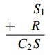

Considere el tema de diseñar un circuito para generar la suma de dos dígitos binarios P y Q. Tanto P como Q puede ser ya sea 0 o 1. Y se conocen los siguientes hechos:
1(2) + 1(2) = 10(2),
1(2) + 0(2) = 1(2) = 01(2),
0(2) + 1(2) = 1(2) = 01(2),
0(2) + 0(2) = 0(2) = 00(2).
De lo que se deduce que el circuito a diseñar debe tener dos salidas —una para el dígito binario de la izquierda (este se llama lo que se lleva) y uno para el dígito binario de la derecha (este se llama la suma). La salida de lo que se lleva es 1 si P y Q son 1; es 0 de otra manera. Así, lo que se lleva se puede producir usando el circuito de puerta AND que corresponde a la expresión booleana P ^ Q. La salida de la suma es 1 si ya sea P o Q, pero no ambas, es 1. La suma puede, por tanto, producirse usando un circuito que corresponde a la expresión booleana para o exclusivo: (P _ Q) ^ ~(P ^ Q). Por tanto, un circuito para sumar dos dígitos binarios P y Q se puede construir como se muestra en la figura. Este circuito se llama semisumador.
Ahora consideremos el problema de cómo construir un circuito para sumar dos números enteros binarios, cada uno con más de un dígito. Ya que la adición de dos dígitos binarios puede dar como resultado llevar a la siguiente columna a la izquierda, puede ser necesario añadir tres binarios en ciertos puntos. En el ejemplo siguiente, la suma en la columna de la derecha es la suma de dos dígitos binarios, y, debido a lo que se lleva, la suma en la columna de la izquierda es la suma de los tres dígitos binarios.
Así, con el fin de construir un circuito que sume varios números dígitos binarios, es necesario incorporar un circuito que calcule la suma de tres dígitos binarios. Tal circuito se llama un sumador completo. Considere una suma general de tres dígitos binarios P, Q y R que da como resultado en llevar C (o el dígito en el extremo izquierdo) y una suma S (el dígito en el extremo derecho).
El funcionamiento del sumador completo se basa en el hecho de que la suma es una operación binaria: Sólo se pueden agregar dos números a la vez. Por tanto P es el primero agregado a Q y después el resultado se suma a R. Por ejemplo, considere la siguiente suma:
El proceso que se muestra aquí se puede dividir en pasos que utilizan circuitos de semisumador.
Paso 1: Sume P y Q utilizando un semisumador para obtener un número binario de dos dígitos.
Paso 2: Sume R a la suma C1S1 de P y Q.
Para esto, proceda como se muestra a continuación:
Paso 2a: Sume R a S1 utilizando un semisumador para obtener el número de dos dígitos C2S
Entonces S es el dígito del extremo derecho de la suma total de P, Q y R.
Paso 2b: Determine el dígito del extremo izquierdo, C, de la suma total de la siguiente manera: En primer lugar observe que es imposible que tanto C1 como C2 sean 1. Si C1 = 1, entonces P y Q son 1 y así S1 = 0. En consecuencia, la suma de S1 y R da un número binario C2S1 donde C2 = 0. Después observamos que C será un 1 en el caso de que la suma de P y Q da como resultado llevar un 1 o en el caso de que la suma de S1 (el dígito del extremo derecho de P C Q) y R da como resultado llevar 1. En otras palabras, C =1 si y sólo si, C1 = 1 o C2 = 1. De lo que se deduce que el circuito que se muestra en la próxima página calculará la suma de tres dígitos binarios.
Dos sumadores completos y un semisumador se pueden utilizar juntos para construir un circuito que va a sumar dos números binarios de tres dígitos PQR y STU para obtener la suma W X Y Z. Esto se muestra en la figura que se encuentra debajo. Tal circuito se llama un sumador en paralelo. Los sumadores en paralelo pueden construirse para sumar números binarios de cualquier longitud finita.
ACLARACION: Si bien los circuitos tienen la denominación de "semisumador", cuando tienen tres entradas, son "sumadores completos". En esta imagen del circuito, se los llama de esa manera a fin de dar a entender que "sumador completo" es el circuito compuesto por varios semisumadores.